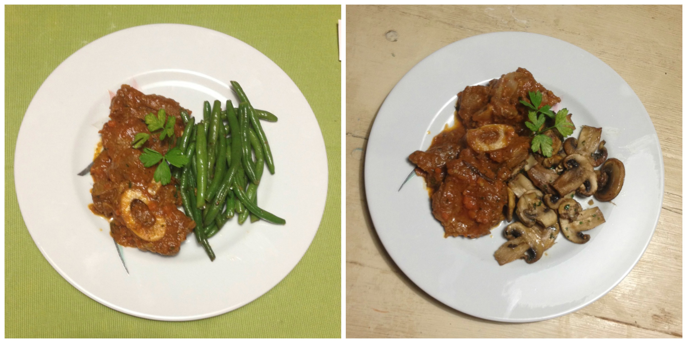
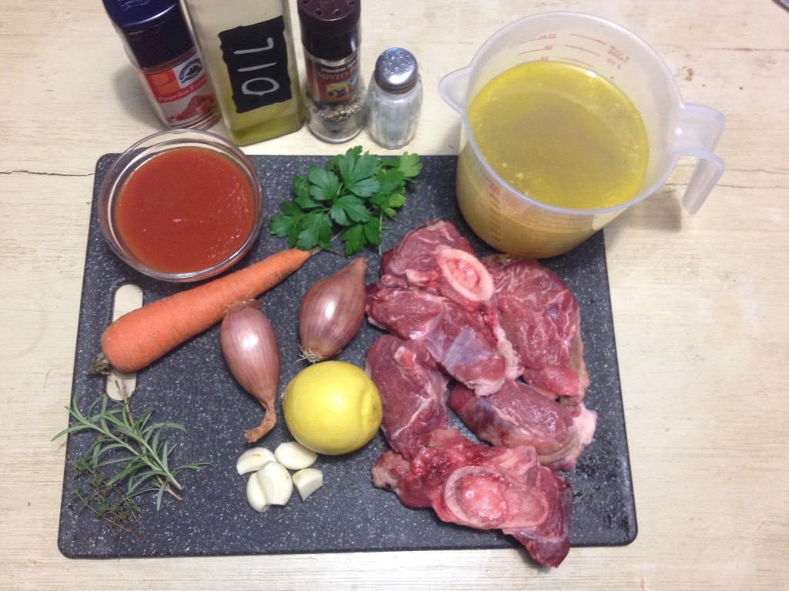
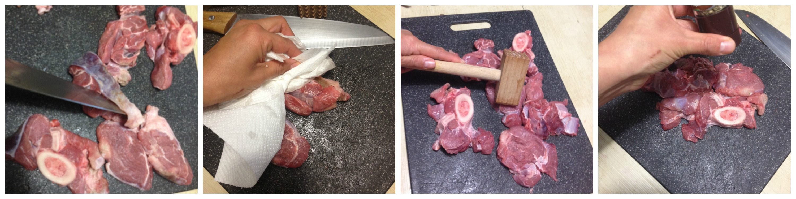
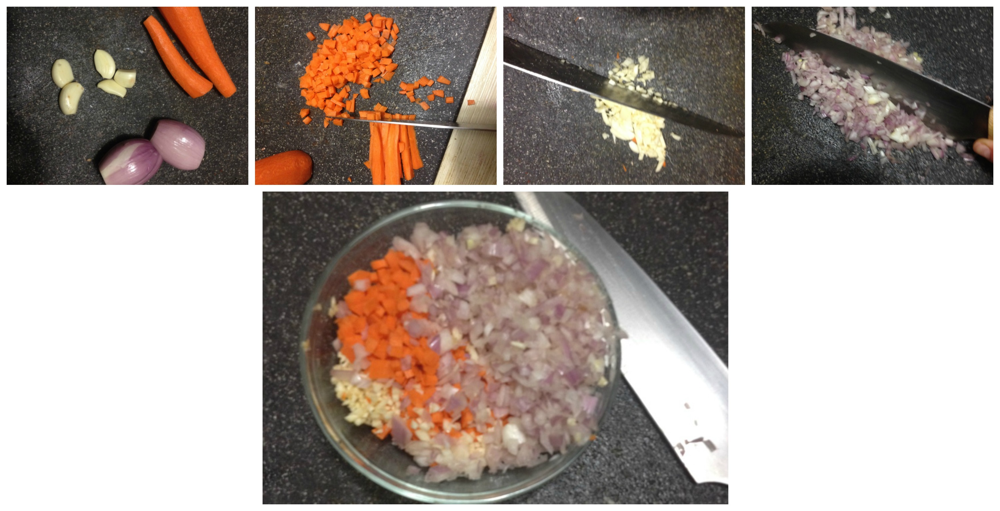
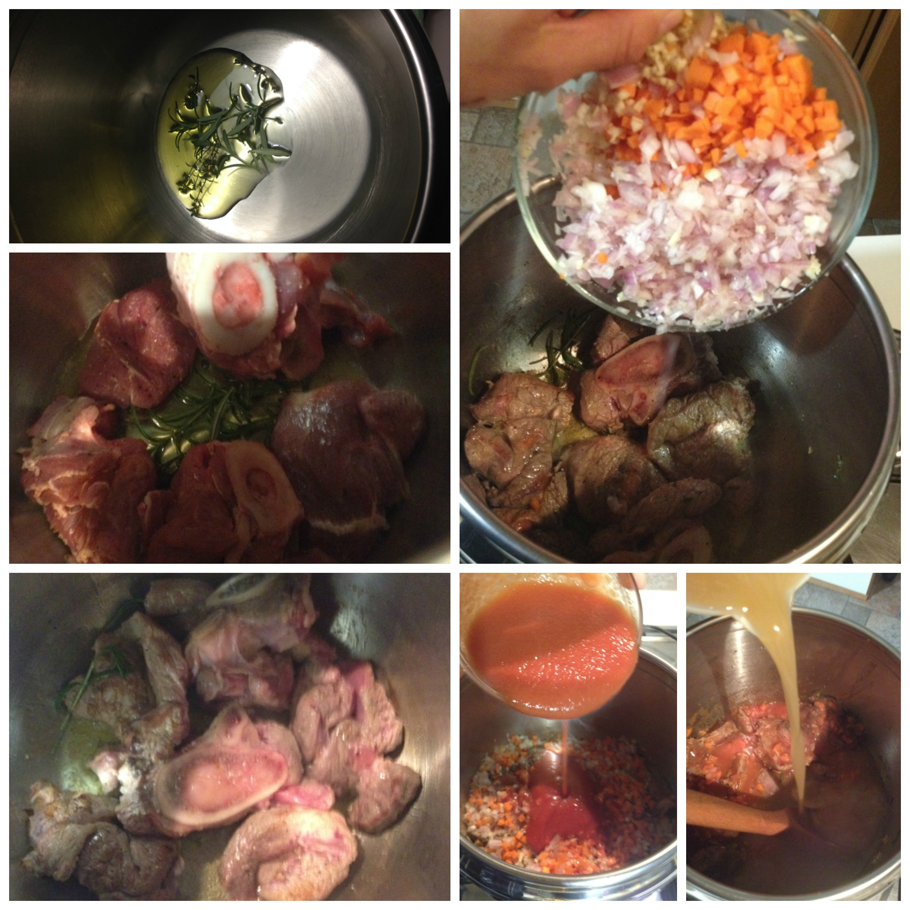
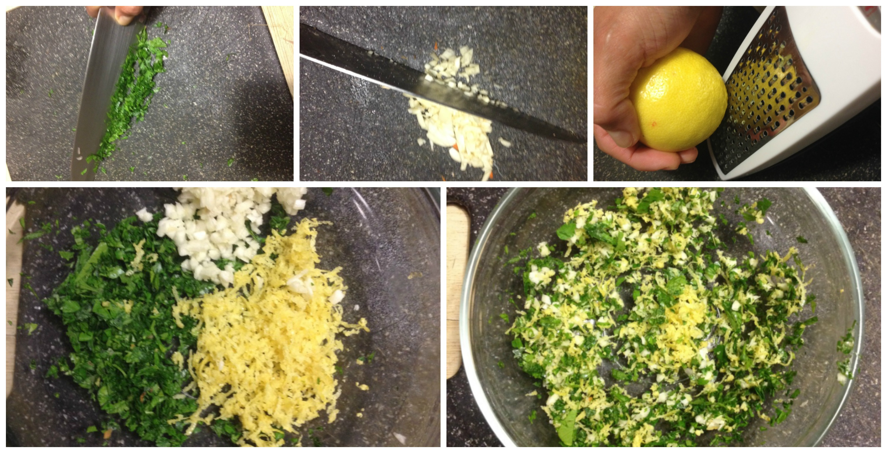
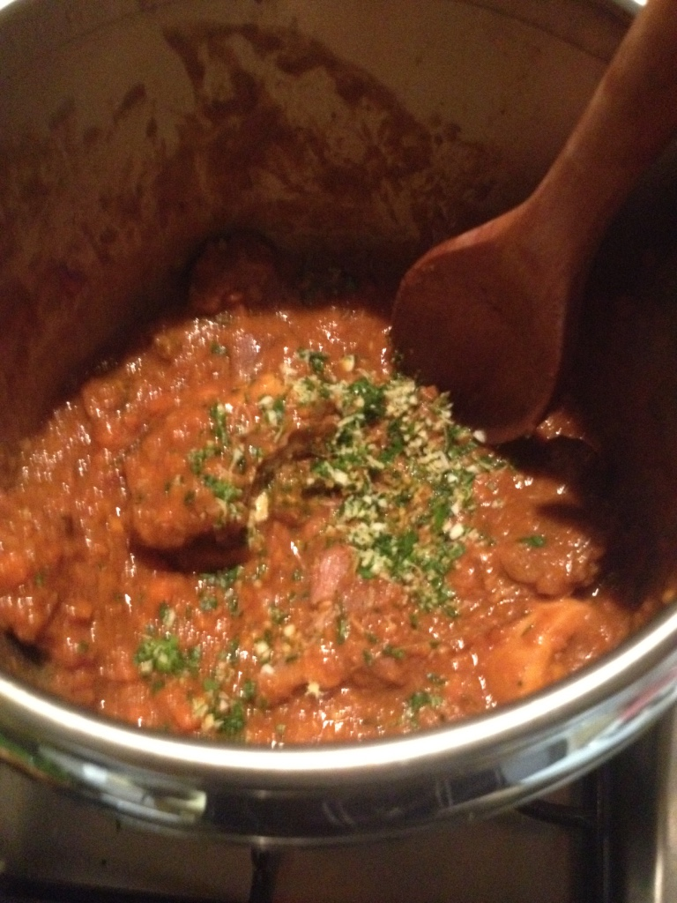

Ossibuchi alla milanese¶

- Serves: 2
- Type: main
Background¶
This is a traditional Italian recipe, and specifically this recipe comes from Milan in north Italy. There are many variations of this old plate (it is known that this was a delicacy around the 700s). The ossobuco is a ross-cut veal shank, and for this plate it is braised with vegetables, white wine and broth. It is often garnished with gremolata (isn’t a nice name?... now try to pronounce it in Italian moving your fist). In the original version (the old one) this plate is without tomato sauce and just braises with white wine, honestly I like it more with tomato sauce. Since we are still in a low carb diet I avoid to coat the ossobuchi (ossobuki) with flour and I did not use white wine and tomato paste and I used a low carb tomato sauce.
Ingredients¶
Ingredients
- 2 ossobuchi (veal shanks)
- 2 fresh sprigs thyme
- 2 fresh sprigs rosemary
- 200 grams low-carb tomato
- 3 cups beef broth (I used my own homemade broth)
- 2 small carrots
- 2 scallions
- 6 garlic cloves
- 1 lemon zest
- 3-4 tablespoon fresh parsley
- olive oil
- paprika
- salt and pepper to taste
Steps¶
Wash the ossobuchi and dry them with kitchen paper, remove the outside skin and extra grease. I heat the meat with a wooden harmer to make it tender. I always recommend to froze the meat during the night and then unfroze it during the day.
Season the meat with paprika, salt and pepper
Prepare the meat
Chop finely all the vegetables and set aside (4 garlic cloves)
Chop the vegetables
Heat olive oil in a large pan
Add the fresh sprigs
Add the meat and brown both sides
Add the vegetables to the meat, stir, add the tomato sauce and pour in the meath broth. Stir everything and put a lid on the pan, bring it to boil and then turn the heat low and braise all for at least 1 hour and 20 minutes or till the meat is tender and smooth. The sauce must be thicker than the beginning. You also can use a pressure cooker if you are used to it, but then you must leave the liquid to become thick after using it.
Cook the ossobuchi
In the meanwhile prepare the gremolata: grate the lemon zest, chop finally two garlic cloves and the parsley, mix everything.
Prepare the gremolata
Right before serving (around 2 minutes before) sprinkle the gremolata on top of the ossobuco and cook. Or if you prefer you can just sprinkle it when the ossobuchi are served.
Adding the gremolata
Can be served with¶
- Sauté champignons (if you are also in a ketodiet)
- Green beans sauté
- risotto alla milanese
- polenta
- potato purée
- sauté potatoes with herbs